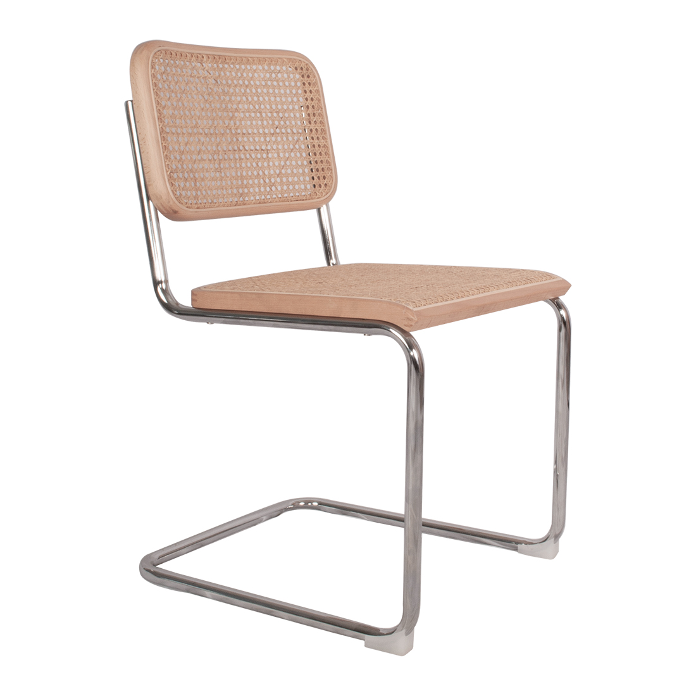

Descripción
La silla Cesca combina una estructura de tubo de acero cromado, doblada en voladizo, con un asiento y respaldo de madera de haya tejidos a mano con paja de Viena. Fue una de las primeras sillas de acero tubular con asiento en voladizo fabricadas en serie, y su diseño está inspirado en el manillar de una bicicleta.
Se llamó originalmente B32, y pasó a llamarse Cesca en honor a Francesca, la hija de Breuer.
Materiales
- Estructura de tubo de acero cromado.
- Marco de asiento y respaldo en madera de haya.
- Trenzado de paja de Viena tejido a mano.
Contexto
Breuer diseñó la Cesca en 1928, durante su etapa en la Bauhaus, como parte de su exploración con el acero tubular que también dio origen a la silla Wassily. La pieza refleja el interés de la escuela por unir la artesanía tradicional con los materiales y métodos industriales.
Versiones
A lo largo de los años, la Cesca ha sido producida por distintos fabricantes: Thonet desde fines de los años veinte, Gavina en la década de 1950 y Knoll desde 1968, quienes también la ofrecen sin paja de Viena, con tapiz de cuero o tela. Una silla Cesca (B32) forma parte de la colección permanente del MoMA de Nueva York.